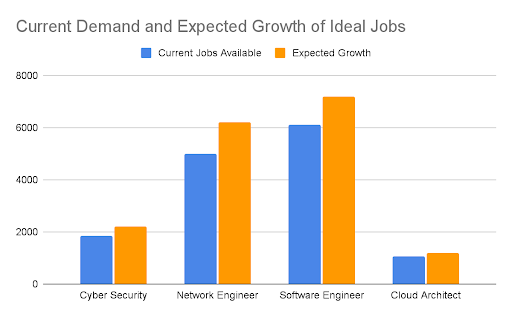
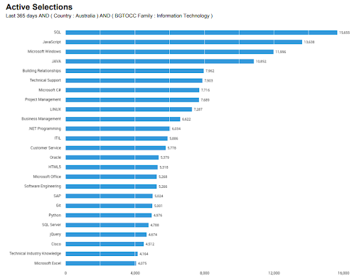
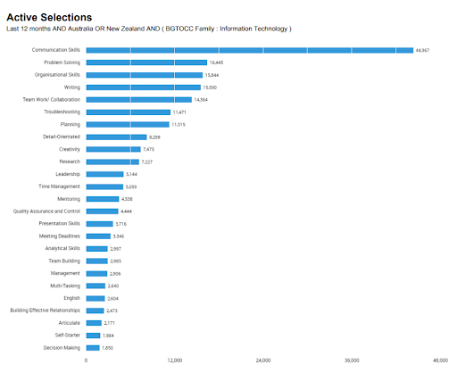

Industry Data
Ideal Jobs:
For our group we had a number of ideal and dream jobs within the IT sector. The jobs consisted of Cloud Architect, Cyber security Analyst, Software engineers and Network Engineers. Many of these jobs are highly sought by employers as their individual skill sets are a huge drivers in the growth of the technology and IT industry as well as critical jobs in the running and maintaining of non-IT centric companies.
As is currently common with most job markets a university degree is looked on fondly when applying for a job within the IT industry which we are all interested in, hence all of us attending university. The skills required for these jobs will most likely be learnt through university and internships as well as personal learning.
| Name | Ideal Job | Skills required |
|---|---|---|
| Shaun/Crispin | Cyber security | -Computer forensics
-Hacking -Problem solving -Communication -Computer science -Ability to adapt and learn |
| Ethan | Network Engineer | -Networking
-Firewalls & security -Troubleshooting -Programming -Communication/public relations -Hardware -DNS -Automated network functions |
| Micheal | Software Engineer | -Programming (the more languages the better) -Problem solving -Attention to detail -Teamwork -communication |
| Rhys | Cloud Acrhitect | -Teamwork -critical thinking -leadership -communication -Knowledge in Azure, PaaS and Saas skills -programming skills (python and or C#) -Basic Cyber security understanding -networking |
How do team members' ideal jobs rank in terms of employer desirability?
Team members' ideal jobs ranked in order of demand (The amount of jobs available on seek) and expected growth from the Australian Jobs report).
As Shown in the graph to the left Software Engineers and Network Engineers
are in major demand in the current market whilst Cyber Security Analysts
and Cloud Architects are not as desirable. All the ideal jobs in the group
are expected to have an increase in demand (growth).
Demand of IT specific skills:
The ranking of our groups IT specific skills:
(Only 3 of our required IT skills were listed)
1. SQL
2. Programming:
- Java Script
- C#
- python
3. Networking (CISCO)
The 3 highest rated IT skills not in our teams skill set:
1. Building relationships
2. Technical support
3. Project management
Rating our groups Soft skills:
1. Communication
2. Problem solving
3. Teamwork
4. Troubleshooting
5. leadership
6. Attention to detail/Analytical skills
The 3 highest rated non IT skills not in our teams skill set:
1. Organisation skills
2. Writing
3. Planning
| Soft Skills | Hard Skills |
|---|---|
| Teamwork | Azure, Pass, SaaS |
| Communication | Computer forensics |
| Leadership | Programming |
| Critical thinking | Hacking |
| Attention to detail | Firewalls |
| Troubleshooting | Networking |
| Hardware | |
| DNS | |
| Automated network functions | |
| SQL |
Have our opinions on our ideal jobs changed?:
Rhys:
After viewing the burning glass data my aspirations to become a cloud architect has dwindled a bit after realising low the demand is for the job compared to other IT jobs but I am still interested in pursuing it as a career sinceI believe I would enjoy it the most. But after viewing the burning glass information I will also try to learn skills for other jobs in the event that I struggle to become a Cloud architect although the skills would be fairly similar between most IT careers.
Michael:
My opinions on my ideal job of becoming a software engineer has not changed, as viewing the burning glass data has further encouraged me to follow that pathway, being the most sought after of the lot. As the primary skill involved in software development is programming, I will continue to learn Python, and try to pick up other languages along the way. SQL, and database management, would be another skill essential to following the pathway of software engineering. Teamwork and communication is also another essential skill, which can be acquired if not already present.
Shaun:
My outlook on cyber security remains pretty much the same. I had done a fair bit of research before I chose which path I’d like to go down, so the figures weren’t one bit surprising. I did see however there were a lot of different skills I needed to learn before I got to where I would like to be. Which in turn gives me a lot more options if I decide to take another path. Knowing that there are several other jobs in demand given these figures, gives me so many more opportunities.
Ethan:
After inspecting the data, my outlook on wanting to become a Network Engineer hasn’t changed significantly. There are future prospects and growth opportunities in the industry similar to Software Engineering, which is what I originally wanted to do when I was undertaking the Bachelor of Software Engineering, but discovered it wasn’t for me. The skills required for my ideal job look challenging and difficult, but also very interesting and rewarding to learn. With that being said, I am not going to tunnel vision on this idea of being a Network Engineer. I am always going to be open to new ideas and opportunities.
Crispin:
After assessing the information presented, I have come to the conclusion that I feel confident in the Cyber Security industry. The job prospects will be increasing as time goes on, considering the trends. Although Cyber security's expected growth isn't as high as network engineering or software engineering, there is still demand for workers and the expected demand is increasing. I'm confident that my skills will allow me to achieve my dream job in the not too distant future.
Sources:
scheme=AGLSTERMS.AglsAgent; corporateName=National Skills Commission 2020, “Australian Jobs Report | National Skills Commission,” National Skills Commission, viewed 17 September 2021,
“Network engineer Jobs in All Australia - SEEK” 2021, SEEK, viewed 17 September 2021,
“Home” 2021, Burning Glass Technologies, viewed 19 September 2021,